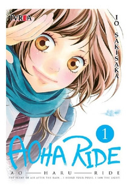
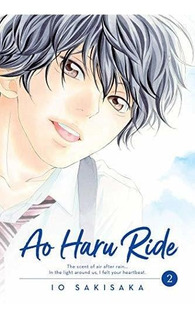
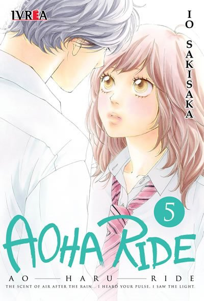
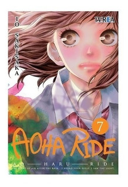
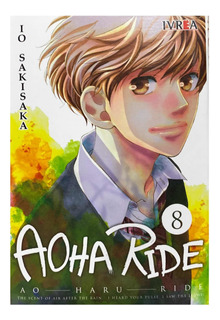
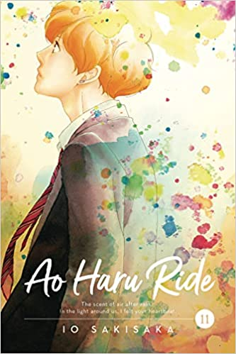

Tomo 1
蒼い春 (Aoi Haru)
Blue Spring

Presenta a los personajes principales y establece la premisa de la historia. Futaba se reencuentra con Kou después de varios años y comienza a explorar sus sentimientos por él.
Tomo 2
夜空の翼 (Yozora no Tsubasa)
Wings in the Night Sky

Futaba y Kou intentan acercarse más mientras lidian con sus propios problemas personales. También se presenta a otros personajes secundarios como Yuri y Shuko.
Tomo 3
きらめく雪の日 (Kirameku Yuki no Hi)
Sparkling Snowy Day

Se exploran más a fondo los sentimientos de Futaba hacia Kou y cómo afectan su amistad. También se introducen nuevos personajes.
Tomo 4
終わりの始まり (Owari no Hajimari)
The Beginning of the End

La relación entre Futaba y Kou se complica cuando Kou comienza a alejarse. La serie también comienza a explorar temas más profundos, como el arrepentimiento y la dificultad de expresar nuestros sentimientos.
Tomo 5
君の名を呼ぶ (Kimi no Na o Yobu)
Calling Your Name

Futaba y Kou se distancian aún más, y la serie comienza a explorar las relaciones entre los personajes secundarios. Se presentan nuevos personajes y se profundiza en las historias de los personajes existentes.
Tomo 6
想いは重なる波のように (Omoi wa kasanaru nami no yō ni)
Feelings Overlap Like Waves

Futaba y Kou comienzan a reconectar, pero su relación sigue siendo complicada debido a su pasado. También se abordan temas como la autoaceptación y la lucha por encontrar tu lugar en el mundo.
Tomo 7
魔法使いと踊れ (Mahoutsukai to Odore)
Dance with the Magician

La relación entre Futaba y Kou se desarrolla lentamente mientras lidian con las consecuencias de su pasado. También se presentan nuevos personajes y se profundiza en las relaciones existentes.
Tomo 8
いつかの手紙 (Itsuka no Tegami)
A Letter from Someday

Futaba y Kou finalmente se besan, pero su felicidad es efímera. La serie comienza a explorar las consecuencias de sus acciones y cómo afectan a su relación.
Tomo 9
風が吹く街 (Kaze ga Fuku Machi)
The Town Where the Wind Blows

La relación entre Futaba y Kou se vuelve más intensa y complicada. Se presentan nuevos personajes y se exploran las relaciones existentes en mayor profundidad.
Tomo 10
あの日の君と今日の僕へ (Ano Hi no Kimi to Kyou no Boku e)
To the You of That Day and the Me of Today

Futaba y Kou enfrentan varios desafíos en su relación, incluyendo la presión social y los sentimientos no correspondidos de otros personajes. La serie también comienza a explorar temas como la madurez y el perdón.
Tomo 11
空と君と、二つの秘密 (Sora to Kimi to, Futatsu no Himitsu)
You, Me and Two Secrets in the Sky

Futaba y Kou enfrentan nuevos obstáculos en su relación, y la serie explora la importancia de la comunicación y la honestidad en las relaciones. También se profundiza en las historias de los personajes secundarios.
Tomo 12
つぼみのままでいてくれ (Tsubomi no Mama de Ite Kure)
Stay as a Bud

La relación entre Futaba y Kou se vuelve aún más complicada, y la serie aborda temas como el miedo al rechazo y la dificultad de ser vulnerable en una relación.
Tomo 13
夢見るように眠りたい (Yumemiru Yō ni Nemuritai)
I Want to Sleep as If Dreaming
El último tomo de la serie se centra en el viaje emocional de los personajes y cómo han crecido y madurado a lo largo de la historia. La serie llega a una conclusión satisfactoria, y los personajes finalmente pueden resolver sus problemas y encontrar la felicidad.